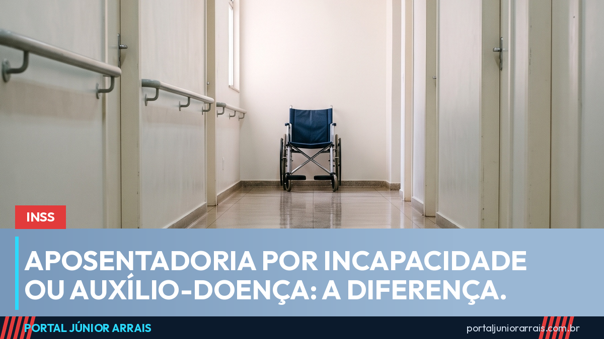

Aposentadoria por incapacidade e auxílio-doença: qual é a diferença

Muita gente usa os dois nomes como se fossem a mesma coisa, e não são. A confusão custa caro, porque as regras de manutenção são bem diferentes.
A linha que separa os dois
Os nomes atuais na lei ajudam a entender. O antigo auxílio-doença hoje se chama benefício por incapacidade temporária. E a antiga aposentadoria por invalidez virou aposentadoria por incapacidade permanente.
A diferença está nas próprias palavras:
- temporária — a pessoa está impedida de trabalhar agora, mas há expectativa de recuperação ou de reabilitação para outra função;
- permanente — conclui-se que ela não tem condições de voltar ao trabalho nem de ser reabilitada para outra atividade que garanta o sustento.
Repare que a incapacidade permanente não exige que a pessoa esteja acamada, nem que a doença seja incurável. O que se avalia é a possibilidade real de voltar ao mercado de trabalho.
O que muda no dia a dia
No benefício temporário existe data prevista para cessar, e o segurado precisa acompanhar esse prazo: chegando a data e continuando incapaz, é preciso pedir prorrogação antes do fim. Muita gente perde o benefício por deixar o prazo passar.
Na aposentadoria por incapacidade permanente não há essa data, mas ela também não é definitiva: o INSS pode convocar para reavaliação periódica, com dispensas previstas em lei para determinadas situações e faixas de idade.
O acréscimo de 25%
Existe um ponto pouco conhecido: quem se aposenta por incapacidade permanente e precisa da ajuda de outra pessoa para as atividades do dia a dia pode ter direito a um acréscimo de 25% sobre o valor do benefício.
Cuidado com golpe
Nesse tema aparece muito quem promete "transformar o auxílio em aposentadoria" mediante pagamento, e quem oferece antecipação de valores atrasados por Pix. A mudança de um benefício para outro depende de avaliação médica, não de pagamento — e nenhum órgão do governo cobra taxa nem pede senha para isso.
Se o seu benefício está para vencer ou se você foi chamado para reavaliação, vale procurar um profissional de sua confiança para entender a sua situação e os prazos.
Conteúdo informativo — não substitui orientação individualizada sobre o seu caso.